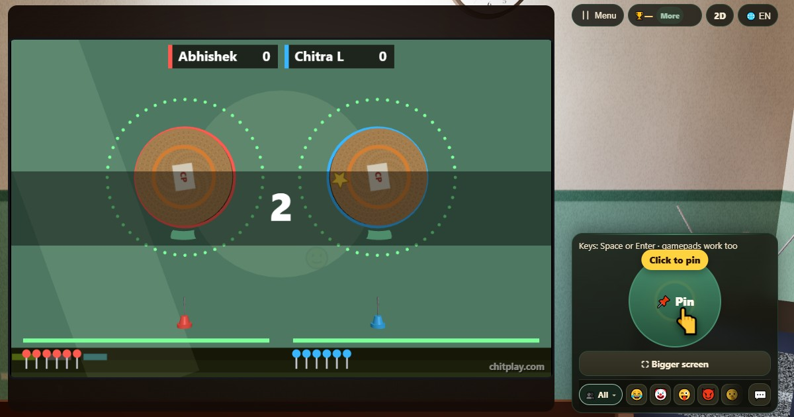

पिन स्पिन (Pin Spin)
- 👥 1–4 खिलाड़ी
- आर्केड गेम (TV पर, 3D में)
- 🆓
भाषा में गाइड
घूमते कॉर्कबोर्ड में पिन लगाएँ, बाकी पिनों को छुए बिना।
English name: Pin Spin

कैसे खेलें
- स्क्रीन टैप करें, Pin बटन, Space या Enter, या गेमपैड बटन दबाएँ: पिन सीधी ऊपर बोर्ड के नीचे जा लगती है।
- ख़ाली जगह का इंतज़ार करें: आपकी पिन पहले से लगी पिन से टकराई तो दौड़ ख़त्म।
- लेवल पूरा करने के लिए स्क्रीन के नीचे दिखी सारी पिनें लगाएँ।
- सुनहरा स्टार स्टिकर पिन करें तो 5 बोनस अंक।
- हर पाँचवाँ लेवल बड़ा बोर्ड है: वह रफ़्तार और दिशा बदलता है।
- हर लेवल की समय सीमा है (नीचे पतली पट्टी): समय ख़त्म होने से पहले सारी पिनें लगाएँ।
अंक कैसे मिलते हैं
हर लगी पिन का 1, हर स्टार का 5, और लेवल पूरा करने पर लेवल नंबर का दोगुना। मेडल 25, 60, 120 और 250 अंक पर।
कौन जीतता है
अकेले हों तो अपना सबसे अच्छा तोड़ें। दूसरों के साथ सब अपने-अपने बोर्ड पर एक साथ पिन लगाते हैं और सबसे ज़्यादा स्कोर जीतता है।
अक्सर पूछे जाने वाले सवाल
क्या यह कभी खत्म होता है?
नहीं: लेवल आते रहते हैं, और जब तक कोई पिन दूसरी पिन को न छू ले, खेल चलता है।
क्या दोस्त साथ खेल सकते हैं?
हाँ, चार तक, हर किसी का अपना बोर्ड, एक स्क्रीन पर, पास में या ऑनलाइन।
क्या यह हर उम्र के लिए सुरक्षित है?
हाँ। यह पुश-पिन और कॉर्कबोर्ड का टाइमिंग खेल है: किसी पर कुछ नुकीला नहीं फेंका जाता, और अंकों की कोई कीमत नहीं।
खेलने के तरीके
- गेस्ट की तरह खेलें: कोई साइन-अप या लॉगिन नहीं। नाम चुनें और तुरंत खेलें।
- कंप्यूटर के साथ: जब कोई साथ न हो, कंप्यूटर खिलाड़ी खाली जगह भर देते हैं। आसान, सामान्य या कठिन चुनें।
- ऑनलाइन खेलें: दुनिया भर के खिलाड़ियों के साथ एक सार्वजनिक टेबल पर बैठें।
- दोस्तों के साथ पास में (Nearby): एक फ़ोन पर गेम शुरू करें और कोड या QR कोड बाँटें। दोस्त अपने फ़ोन से जुड़ जाते हैं।
- एक ही फ़ोन पर: फ़ोन बारी-बारी से सबको दें। पूरे परिवार के लिए एक ही डिवाइस काफ़ी है।
दूसरी भाषाएँ
- Hinglish: Pin Spin
- Español: Pin Spin
- Português: Pin Spin
- Français: Pin Spin
- Deutsch: Pin Spin
- Bahasa Indonesia: Pin Spin
- Türkçe: Pin Spin
- Italiano: Pin Spin
- 日本語: ピンスピン
- 한국어: 핀 스핀
- 中文: 转盘插针
- Русский: Булавки на круге
- اردو: پن اسپن
- नेपाली: पिन स्पिन
- বাংলা: পিন স্পিন
- English: Pin Spin · पूरे नियम (English)
सारे गेम


ChitPlay में कोई असली पैसा, सट्टा या इनाम नहीं है। अंकों की कोई क़ीमत नहीं है।